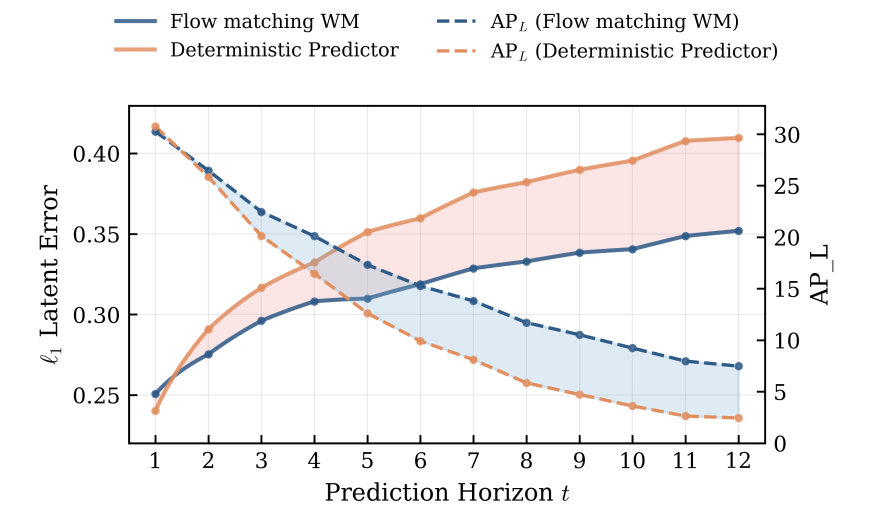

Mahesh Reddy · 11 October 2026
This post is a write-up for understanding how errors compound when world models are rolled out autoregressively. It proposes no new formulations: every result here is taken from prior literature and cited where it appears, and the aim is to collect those results in one place with a consistent notation.
AI was used in the process of writing it. The post covers what world models and JEPA predictors are, why deterministic and stochastic predictors behave differently, how imitation learning frames autoregressive prediction, and two derivations of error accumulation: the classic \(H^2\epsilon\) bound for discrete outputs, and a Lipschitz analysis for continuous latent rollouts.
A world model is a learned model of how an agent's environment evolves: given past observations and actions, it predicts what happens next (Ha & Schmidhuber 2018; LeCun 2022). A robot can use one to "imagine" the result of a sequence of actions before executing it, which turns control into a search over imagined futures.
There are three broad families, distinguished by what is predicted:
This post focuses on JEPA.
JEPA world models. An encoder maps each observation to a representation, \(z_t = E_\theta(o_t)\). A predictor \(P_\phi\) takes a window of past representations and actions and predicts the next representation:
\[ \hat z_{t+1} = P_\phi\big(z_{t-k:t},\; a_{t-k:t}\big) \]The training target is the encoding of the real next observation from a slowly updated (EMA) target encoder \(\bar E\), with gradients blocked through the target (\(\mathrm{sg}\) = stop-gradient):
\[ \mathcal{L}_{\text{TF}}(\phi) = \sum_t \big\|\, P_\phi(z_{t-k:t}, a_{t-k:t}) - \mathrm{sg}\big[\bar E(o_{t+1})\big] \big\|_1 \]Predicting in representation space lets the model ignore unpredictable detail, such as the exact texture of a cloth, and spend capacity on what matters for control (LeCun 2022). Examples in robotics include V-JEPA 2-AC (Assran et al. 2025), which adds action conditioning to a video-pretrained JEPA, and DINO-WM (Zhou et al. 2024), which trains a predictor on frozen pretrained features.
Two properties matter for the rest of this post:
A deterministic predictor trained with an \(\ell_1\) or \(\ell_2\) loss predicts an average of the possible futures. When the future is multimodal, that average is often not a possible future at all, and feeding it back into the model makes compounding worse. Porcher et al. (2026) make this argument for world models built on pretrained features and propose a stochastic alternative based on flow matching.
Why regression averages. Fix a context \(x\) and let the next latent \(Y\) be random given \(x\). A deterministic predictor must output a single value \(\hat y(x)\). Under the squared loss, the risk splits into two terms:
\[ \mathcal{R}_2(\hat y) = \mathbb{E}\big[\|\hat y - Y\|^2 \mid x\big] = \big\|\hat y - \mathbb{E}[Y \mid x]\big\|^2 + \mathbb{E}\big[\|Y - \mathbb{E}[Y\mid x]\|^2 \mid x\big] \]The second term does not depend on \(\hat y\), so the minimizer is the conditional mean, \(\hat y^*(x) = \mathbb{E}[Y \mid x]\). Under the absolute loss, the minimizer is the conditional median, taken coordinate-wise.
A bimodal example. Suppose that, given the same context, the world goes one of two ways with a fair coin toss:
\[ Y = \begin{cases} y_L & \text{with probability } \tfrac12 \\ y_R & \text{with probability } \tfrac12 \end{cases}, \qquad y_L \neq y_R \]Think of a pushed block that may slide left or right, or another agent that may turn either way.

How each kind of model compounds. In the language of Section 6, rollout error follows \(\Delta_{t+1} \le \rho\,\Delta_t + \epsilon_t\), where \(\rho\) includes a term \(L_e\) for how fast the model's error grows on inputs unlike its training data.
What the figure shows. Values read approximately from the plot: at \(t = 1\) the deterministic predictor has a slightly lower \(\ell_1\) error (about 0.24 vs. 0.25). By \(t = 12\) its error is about 0.41 against 0.35 for the flow-matching model, and its \(\mathrm{AP}_L\) (the paper's downstream perception metric) falls from about 30 to under 5, against about 8 for the stochastic model. Lower one-step error with faster growth is exactly the small-\(\epsilon\), large-\(\rho\) pattern the recursion predicts.
Many robotics tasks require predicting several steps ahead. A one-step model is applied repeatedly, with each prediction fed back in as input:
\[ \hat z_{t+1} = P_\phi(z_{t-k:t}, a_{t-k:t}), \quad \hat z_{t+2} = P_\phi(\ldots, \hat z_{t+1},\; a_{\ldots:t+1}), \quad \ldots \]Training and deployment see different inputs:
A small error at one step puts the model in a context it never saw during training. There its predictions are less reliable, so the next error tends to be larger, and that pushes the context even further from the data. Errors compound with the number of steps.
Ross & Bagnell (2010) made this precise for imitation learning. A learner that errs with probability \(\epsilon\) on the distribution of inputs seen in the data can make up to \(H^2\epsilon\) mistakes in expectation over \(H\) steps on the distribution of inputs it creates for itself. The rest of this post derives that result, explains why it applies to world models, and extends it to the continuous latent spaces JEPA models actually use.
Environment and data. The robot interacts with a partially observable environment, a POMDP (Kaelbling, Littman & Cassandra 1998). At step \(t\) it has the history \(h_t = (o_0, a_0, \ldots, o_t)\). An expert policy \(\pi^*\) produces a dataset of trajectories:
\[ \mathcal{D} = \big\{(o_t, a_t)\big\}_{t=0}^{H-1}, \qquad a_t \sim \pi^*(\cdot \mid h_t) \]Let \(d^t_\pi\) be the distribution over histories at step \(t\) when policy \(\pi\) is running, and \(d_\pi = \tfrac{1}{H} \sum_t d^t_\pi\) its average over the episode. The dataset is a sample from \(d_{\pi^*}\).
Learner and objective. We learn \(\hat\pi\) from \(\mathcal{D}\). A per-step cost \(C(h_t, a_t)\) measures how bad the output at step \(t\) is, and the total cost is:
\[ J(\pi) = \mathbb{E}_{\tau\sim\pi}\Big[\sum_{t=0}^{H-1} C(h_t, a_t)\Big] = \sum_{t=0}^{H-1}\mathbb{E}_{h\sim d^t_\pi}\big[C_\pi(h)\big] \]Goal: make \(J(\hat\pi) - J(\pi^*)\) small.
What \(C\) can be. \(C\) is any per-step quantity where lower is better: a task cost, a prediction error, or a reward written as \(C = r_{\max} - r\). The \(H^2\epsilon\) bound in Section 5 also needs \(C\) to be bounded, \(C \in [0, C_{\max}]\). Unbounded losses such as the latent \(\ell_1\) error are handled by the Lipschitz analysis in Section 6.
A world model is an imitation learner. The same framework covers both cases:
| Policy learning | JEPA world model | |
|---|---|---|
| Learner | policy \(\hat\pi\) | predictor \(P_\phi\) |
| Input | history \(h_t\) | context \((z_{t-k:t}, a_{t-k:t})\) |
| Output | action \(a_t\) | prediction \(\hat z_{t+1}\) |
| "Expert" | demonstrator \(\pi^*\) | the real world: \(z^*_{t+1} = \bar E(o_{t+1})\) |
| Output fed back as | next state, via the environment | next context entry, directly |
| Cost \(C\) | task cost, or \(\mathbf{1}[a_t \neq a^*_t]\) | \(\|\hat z_{t+1} - z^*_{t+1}\|\) |
| Training | behavior cloning | teacher forcing |
In the world-model column, the robot's actions are given from outside, from the dataset or from a planner's candidate sequence. Teacher-forced training of a world model is behavior cloning, with the environment as the expert (Venkatraman, Hebert & Bagnell 2015).
Behavior cloning and teacher forcing are supervised learning on \(d_{\pi^*}\):
\[ \hat\pi = \arg\min_{\pi}\; \mathbb{E}_{h\sim d_{\pi^*}}\big[\ell(\pi(h), \pi^*(h))\big] \]Supervised learning guarantees low error on new samples from the same distribution. But at test time the input distribution evolves according to the learner itself:
\[ d^{t+1}_{\pi}(h') = \sum_{h,\,a} d^t_\pi(h)\;\pi(a\mid h)\;P(o'\mid h, a), \qquad h' = (h, a, o') \]The distribution at step \(t+1\) depends on the policy's outputs at all earlier steps. As soon as \(\hat\pi \neq \pi^*\) anywhere it visits, \(d_{\hat\pi} \neq d_{\pi^*}\). Training uses \(d_{\pi^*}\) and testing uses \(d_{\hat\pi}\).
This train–test mismatch (covariate shift) is built into sequential prediction, not caused by poor data collection.
This section follows Ross & Bagnell (2010) and assumes a deterministic expert, 0-1 loss, and \(C \in [0, 1]\). Define the training error at step \(t\) and its episode average:
\[ \epsilon_t = \mathbb{E}_{h\sim d^t_{\pi^*}}\Big[\Pr_{a\sim\hat\pi(h)}\big(a \neq \pi^*(h)\big)\Big], \qquad \epsilon = \tfrac{1}{H}\textstyle\sum_t \epsilon_t \]Distribution shift grows linearly. Couple the two rollouts. Until the learner's first disagreement with the expert, both trajectories are identical. So the histories can only differ if a disagreement happened at some earlier step \(i\). Each such disagreement has probability \(\epsilon_i\), measured on the expert's distribution because, up to the first mistake, that is where we are. By the union bound:
\[ \mathrm{TV}\big(d^t_{\hat\pi},\, d^t_{\pi^*}\big) \;\le\; \sum_{i=0}^{t-1}\epsilon_i \;\approx\; t\,\epsilon \]Test error exceeds training error. For a loss bounded by 1:
\[ \mathbb{E}_{h\sim d^t_{\hat\pi}}[\ell] \;\le\; \epsilon_t + \sum_{i < t}\epsilon_i \]Averaged over the episode, the test error can be up to about \((H+1)\epsilon/2\), roughly \(H/2\) times the training error.
Cost grows quadratically. At each step, the learner pays more than the expert only if it has disagreed by then, and then at most 1 more:
\[ J(\hat\pi) - J(\pi^*) \;\le\; \sum_{t=0}^{H-1}\sum_{i=0}^{t}\epsilon_i \;=\; \sum_{i=0}^{H-1}(H-i)\,\epsilon_i \;\le\; H^2\epsilon \]A mistake at step \(i\) is weighted by \((H - i)\), the number of steps remaining to pay for it. With \(C \in [0, C_{\max}]\) the bound becomes \(C_{\max} \cdot H^2\epsilon\). Independent i.i.d. predictions would give only \(H\epsilon\). The extra factor of \(H\) is the price of feeding outputs back as inputs.
The bound is tight: Ross & Bagnell give an example where one mistake leads to a region with no data and cost 1 for every remaining step.
JEPA predictors output continuous vectors, so "mistake or not" becomes "how far off." This requires one new tool.
A function \(g\) is \(L\)-Lipschitz with respect to a norm \(\|\cdot\|\) if:
\[ \|g(x) - g(y)\| \;\le\; L\,\|x - y\| \qquad \text{for all } x, y \]\(L\) is the worst-case stretch factor: no two inputs end up more than \(L\) times further apart than they started.
For clarity, take a context of one step; Section 6.6 extends to windows. Assume the true representations evolve by some transition \(F\), with \(z^*_{t+1} = F(z^*_t, a_t)\) and \(z^*_t = \bar E(o_t)\). Define:
Adding and subtracting \(P_\phi(z^*_t, a_t)\), the predictor applied to the true representation, gives an exact identity:
\[ \hat z_{t+1} - z^*_{t+1} = \underbrace{\big[P_\phi(\hat z_t, a_t) - P_\phi(z^*_t, a_t)\big]}_{\text{old gap, passed through the predictor}} + \underbrace{\big[P_\phi(z^*_t, a_t) - F(z^*_t, a_t)\big]}_{\text{teacher-forced error}} \]If \(P_\phi\) is \(L_P\)-Lipschitz in its representation input, the triangle inequality gives:
\[ \Delta_{t+1} \;\le\; L_P\,\Delta_t + \epsilon_t \]Where did the covariate shift go? It is inside \(L_P\). This is a worst-case constant over all inputs, including contexts far from the data, so it captures how badly the predictor behaves off-distribution.
The same thing, with the shift made explicit. Instead add and subtract \(F(\hat z_t, a_t)\), what the real world would do from the predicted representation. With \(e(z) = \|P_\phi(z, a) - F(z, a)\|\) the model error at state \(z\):
\[ \Delta_{t+1} \;\le\; \underbrace{L_F\,\Delta_t}_{\text{real dynamics stretch the gap}} + \underbrace{e(\hat z_t)}_{\text{model error at an off-data input}} \]On data \(e(z^*_t) = \epsilon_t\). If the error grows with slope at most \(L_e\) away from the data, then \(e(\hat z_t) \le \epsilon_t + L_e\,\Delta_t\), and:
\[ \Delta_{t+1} \;\le\; (L_F + L_e)\,\Delta_t + \epsilon_t \]The two forms are both valid and have the same shape. Write \(\rho\) for the stretch factor (\(L_P\), or \(L_F + L_e\)). The second form shows that \(\rho\) has two sources: the physics (\(L_F\): unstable or contact-rich dynamics amplify small differences) and the model (\(L_e\): accuracy degrades on its own outputs). A low teacher-forced error \(\epsilon\) says nothing about \(L_e\).
Starting from \(\Delta_0 = 0\):
\[ \Delta_1 \le \epsilon_0, \quad \Delta_2 \le \rho\,\epsilon_0 + \epsilon_1, \quad \ldots, \quad \Delta_t \;\le\; \sum_{k=0}^{t-1}\rho^{\,t-1-k}\,\epsilon_k \]Each earlier error is multiplied by \(\rho\) once for every step it has been carried. With a constant per-step error \(\epsilon_k = \epsilon\), this is a geometric sum:
\[ \Delta_t \;\le\; \epsilon\,(1 + \rho + \cdots + \rho^{t-1}) = \begin{cases} \epsilon\,\dfrac{1-\rho^t}{1-\rho} \;\le\; \dfrac{\epsilon}{1-\rho}, & \rho < 1 \\[1.5ex] \epsilon\, t, & \rho = 1 \\[1ex] \epsilon\,\dfrac{\rho^t - 1}{\rho - 1}, & \rho > 1 \end{cases} \]Total prediction error. Take the per-step cost \(C_t = \|\hat z_{t+1} - z^*_{t+1}\| = \Delta_{t+1}\), which is the JEPA loss evaluated on rollouts:
| Stretch \(\rho\) | Gap at step \(t\) | Total cost over \(H\) steps |
|---|---|---|
| \(\rho < 1\) | bounded by \(\epsilon/(1-\rho)\) | \(\le \epsilon H/(1-\rho)\): linear in \(H\) |
| \(\rho = 1\) | \(\epsilon t\) | \(\epsilon H(H+1)/2\): quadratic in \(H\) |
| \(\rho > 1\) | grows like \(\rho^t\epsilon\) | exponential in \(H\) |
The \(\rho = 1\) row is the \(H^2\epsilon\) of Section 5. In the discrete case, a disagreement is never undone (the trajectories stay separated), which is exactly a stretch factor of 1. The 0-1 result is one regime of the continuous one. In continuous control, \(\rho > 1\) is possible, so errors can grow exponentially (Simchowitz, Pfrommer & Jadbabaie 2025).
Planning error. A JEPA planner scores a candidate action sequence by the energy \(\mathcal{E} = \|\hat z_{t+H} - z_{\text{goal}}\|\). By the triangle inequality this is 1-Lipschitz in the final prediction, so:
\[ \big|\,\mathcal{E}_{\text{predicted}} - \mathcal{E}_{\text{true}}\,\big| \;\le\; \Delta_H \]The planner's error in judging a plan is at most the rollout gap at the horizon. If \(\rho > 1\), long-horizon plans are ranked using numbers that may be dominated by accumulated error. This is one reason JEPA planners replan frequently over short horizons (receding-horizon control).
With a window of \(k+1\) past representations, the predictor is sensitive to each slot, with Lipschitz constants \(L_0, \ldots, L_k\) (most recent through oldest). Then:
\[ \Delta_{t+1} \;\le\; \sum_{j=0}^{k} L_j\,\Delta_{t-j} + \epsilon_t \]Bounding every gap in the window by the largest so far, \(M_t = \max_{i \le t} \Delta_i\), gives \(M_{t+1} \le \big(\sum_j L_j\big)\, M_t + \epsilon_t\). This is the same recursion with \(\rho = \sum_j L_j\). During a rollout, every slot in the window is eventually filled with the model's own predictions, so a longer context doesn't by itself prevent compounding. What matters is the total sensitivity to those slots.
The recursion \(\Delta_{t+1} \le \rho\,\Delta_t + \epsilon_t\) suggests two targets. Teacher forcing reduces \(\epsilon\), but only training on the model's own outputs reduces the off-data part of \(\rho\). That is the idea behind DaD (Venkatraman, Hebert & Bagnell 2015), DAgger (Ross, Gordon & Bagnell 2011), and scheduled sampling (Bengio et al. 2015).
V-JEPA 2-AC trains its predictor with a teacher-forced \(\ell_1\) loss plus a rollout loss over two autoregressive steps, and the rollout term is described as critical for stable autoregressive prediction (JEPAwiki; confirm in Assran et al. 2025). In the language above, the rollout loss directly penalizes \(\Delta_2\). That forces the predictor to behave well on its own outputs and lowers the effective stretch factor \(\rho\).
The V-JEPA 2-AC training detail in Section 6.7 comes from a secondary wiki; confirm it in the paper. Section 6 is a derivation in the style of Asadi et al. (2018), not a quoted theorem. The other references are from memory, so verify venues and years before publishing.
Sources: JEPAwiki: World Models and Planning · JEPAwiki: V-JEPA 2